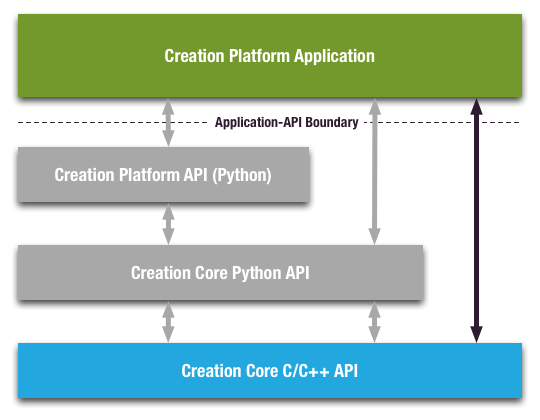

Introduction¶
The Fabric Core C/C++ API, referred to as CAPI in this document, is the lowest-level API in the Fabric Platform application stack. The main purpose of CAPI is to provide the native language layer for the Fabric Core Python bindings; however, a sophisticated Fabric Platform application can interface directly to CAPI if needed.
Example use cases where interfacing to CAPI might be desired include:
- Interfacing a Fabric Platform application with a third-party application whose plugin or extension API does not provide or provides a deficient Python API
- Interfacing pre-built Fabric Platform content with a runtime engine such as a game engine
- Applications where the runtime overhead of the Python interpreter cannot be afforded
CAPI is a direct C- and C++-language interface to Fabric Core. CAPI fully exposes Fabric Core to a C and C++ language programming environment. Using CAPI, you can create Fabric Core dependency graphs, load data into the group nodes, perform KL operator evaluations, render results into viewports and/or obtain the results of evaluations for further work. All the the functionality of Fabric Core is available, including the powerful Fabric Platform extension mechanism. This guide assumes the reader is already familiar with the main concepts of Fabric Core; complete documentation on all aspects of Fabric Platform and the Fabric Core can be found at Fabric Engine Unofficial Documentation 日本語版.
One API, Two Interfaces¶
CAPI is implemented as a pure C API with a thin, inlined C++ interface that makes it easier to use in C++ applications. This is done to minimize linking issues, as the C linking interface on the platforms that Fabric Platform supports is much more controlled than the C++ linking interface. The C++ interface is thus purely a C++ programmer convenience; however, it is a big programmer convenience, and as such it is recommended that you use the C++ language interface when possible. Both interfaces link with exactly the same shared library (DLL).
When discussing the API in this guide, we will always present both the C and C++ varieties. There are a few key differences in the usage of C versus the C++ APIs, which we discuss in detail below.
Work in Progress¶
This document is current a work-in-progress; there are lots of missing sections. However, if you’re willing to dig through the code a bit, it is possible to learn to use CAPI through experimentation and copying examples. The CAPI Build Environment explains how to build the code samples provides with CAPI and gives you the location of the CAPI header files. The code samples will give you a starting point for building CAPI applications, and to see what functionality is available through CAPI you can always resort to looking at the CAPI header file $FABRIC_DIR/include/FabricEngine/FabricCore.h.
The Road Ahead¶
The remainder of the guide is laid out as follows:
- We begin by discussing the build environment CAPI applications in The CAPI Build Environment, and in particular where to find and how to build the CAPI examples. The examples are a good starting point for seeing actually CAPI code in action.
- As mentioned above, CAPI provides both a C and C++ interface. The C Language Interface and The C++ Language Interface describe the general practices for each of the interfaces.
- Before an application or plugin can use CAPI, it must first tell CAPI to initialize and then create a CAPI client of the Fabric Core. Clients and the Application Lifecycle describes the lifecycle of a CAPI application, and explains how clients are created and used.
- (TBD) A good application programming technique is to always check the results of code at runtime for any errors that might have occurred. exceptions describes in detail the error and exception handling mechanisms used by CAPI.
- (TBD) CAPI introduces a basic type called a variant that is used in many cases to pass heterogenous data in and out of the Fabric Core. variants details the use of variants.
- (TBD) CAPIPG.registered-types describes the interface to the registered types system that is provided by CAPI.
- (TBD) The primary interface to the Fabric Core is through the use of the different objects that compose a Fabric Core dependency graph. dg-objects provides a full description of the dependency graph API that is provided by CAPI.